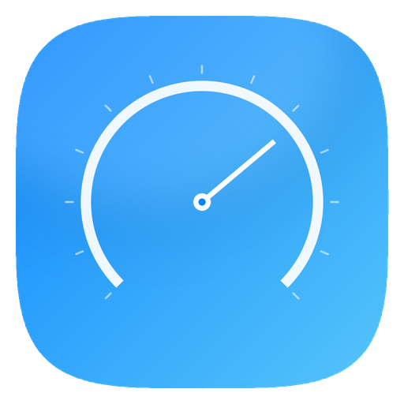

NetPulse基于 Flutter 丝滑界面 与 Rust 原生高性能核心。多 CDN 轮询接入、动态慢段对半拆分下载、网页直链资源嗅探、43 万离线 IP 归属地库，端到端直接通信，纯粹零中转、零隐私追踪。
在网页端体验 NetPulse 核心四大标签页与 FlClash 悬浮胶囊导航坞的流畅操作。
摒弃传统网络工具臃肿、广告泛滥与中间代理转发的痛点，用自研 Rust 原生核心重构网络体验。
所有底层测速打流、DNS 并发轮询、动态分块多线程写入与 TLS 协议栈，完全由自研 Rust 引擎（libnetpulse_core.so）在宿主直接执行。通过 JSON-over-FFI 与 110ms 增量轮询向 Flutter 表现层实时上报数据，不产生任何额外内存开销，告别 Java GC 卡顿。
底部留白悬浮药丸 Dock，独创滑动透镜（Sliding Lens）、横向拖拽跟手与弹性物理动效。精炼四大主标签，支持八色考究主题色与 AMOLED 纯黑夜间自适应。
支持 1–32 并发连接、64 KB–8 MB 动态分块切分。运行中遇慢速连接段自动对半拆分抢占全速带宽，无碎片空洞。多 CDN 镜像故障自动接管轮询，断点续传元数据（.pmdown.json）强校验。
基于 Android System WebView，正常浏览网页的同时自动嗅探直链。支持一键将页面 Cookie、User-Agent、Referer 及鉴权标头注入下载器，跨域自动清洗避免凭据泄漏。
TCP Ping 纳秒级往返测试、DNS A/AAAA 多服务器解析横向对比、STUN NAT 穿透类型检测以及内置 libiperf3.so 原生打流压测。
内置 DB-IP 离线国家段种子库，零 IO 毫秒级二分匹配。支持在线 CSV/GZ 热更新原子替换，可配置自定义查询 API。
无任何第三方统计或广告 SDK，无账号体系。流量直连目标服务，敏感 Cookie / Authorization 物理隔离在应用私有沙盒。
NetPulse 的每一次 CI 构建均在 GitHub Actions 纯净容器中严格编译、通过 16 KB 内存页对齐检查并自动比对发布指纹，确保分发产物安全可靠。
深入解析 NetPulse 的技术实现细节、下载原理与安全机制。
-Wl,-z,max-page-size=16384，确保在 Android 15/16 及未来旗舰设备上稳定如初。